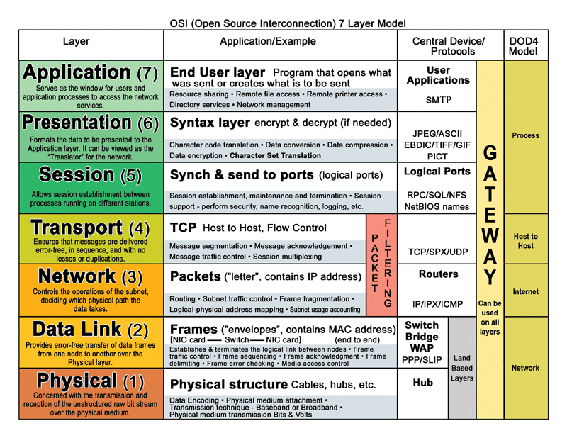

hacker修道院入门
成为hacker大神的必备技能
本小节主要参看了 这个网页 。
基本技能
理解下列网络术语:
- DHCP（Dynamic Host Configuration Protocol）
- NAT
- Subnetting
- IPv4
- Ipv6
- Public v Private IP
- DNS
- Routers Switches
- VLANS
- OSI model
- MAC addressing
- ARP
提升你的linux技能
熟练 Wireshark 和 Tcpdump 工具
使用VirtualBox或者VMWare来虚拟你的hack环境使其更加安全。
熟悉密钥领域相关知识，如: PKI, SSL, IDS firewall 等。
无线网络相关知识: 如加密算法 WEP WPA WPA2 等。
如何监听网络: wireshark和OSI模型简介
本小节主要参看了 这个网页 。
主要是理解OSI模型，请看下图（图片来自网络）:

第一层是物理层，比如具体的以太链路电缆链接设备等。第二层是数据链路层，在数据链路层里面的所有网络包都是二进制形式，然后他们将送入物理层进行传输。这一层也有一个最基本的寻址框架，Media Access Control address，也就是人们常说的MAC地址。
第三层是网络层，决定数据如何在网络中传播的，它也把电脑名字翻译为了MAC地址。并且路由器也在网络层进行工作。路由器理解IP地址就是网络层工作的过程。
第四层是传输层，传输层把从会话层接受的数据分解成为一个个包，然后把这些包发送给网络层。 Transport Layer Security 也和传输层有关。
第五层是会话层，第六层是表示层，第七层是应用层，后面这些我们在套接字编程那里接触得比较多了。
wireshark
在ubuntu下安装wireshark很简单:
sudo apt-get install wireshark
不过在使用上，如果我们坚持其建议的不要以root用户来运行，那么其推荐的使用方法是:
- 用root运行
dumpcap命令 - 将获取到的网络封包文件改变所有者，然后用
wireshark来查看。
这里我们看到很多协议，比如ARP，DNS，HTTP之类的，似乎基本上网络上的一切运动封包都被抓过来了。
hacker基础: 双标记
本小节主要参看了 这个网页 。